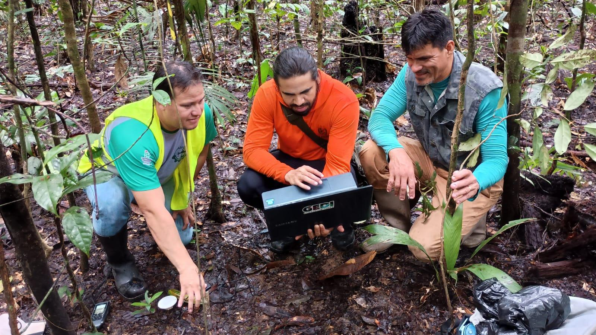
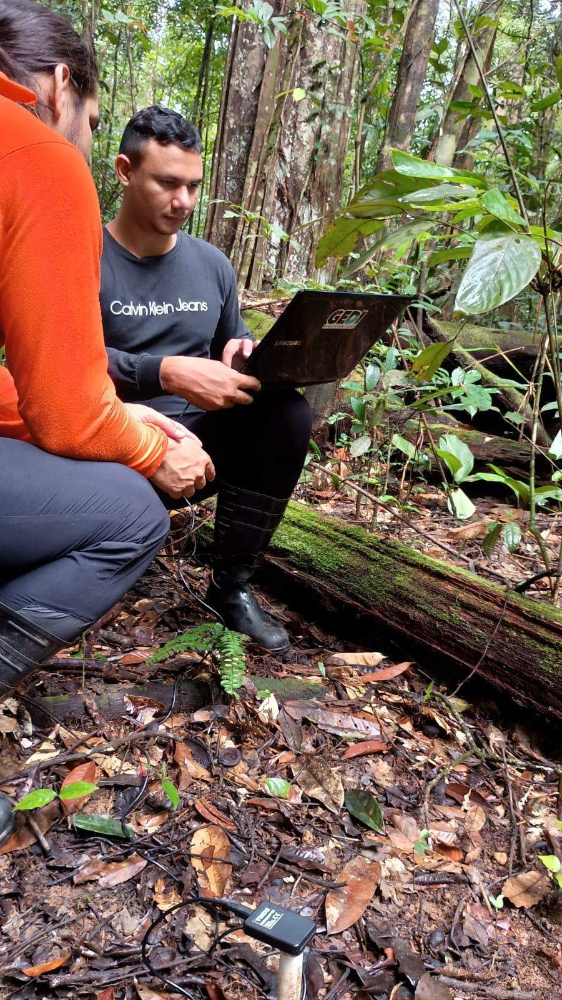
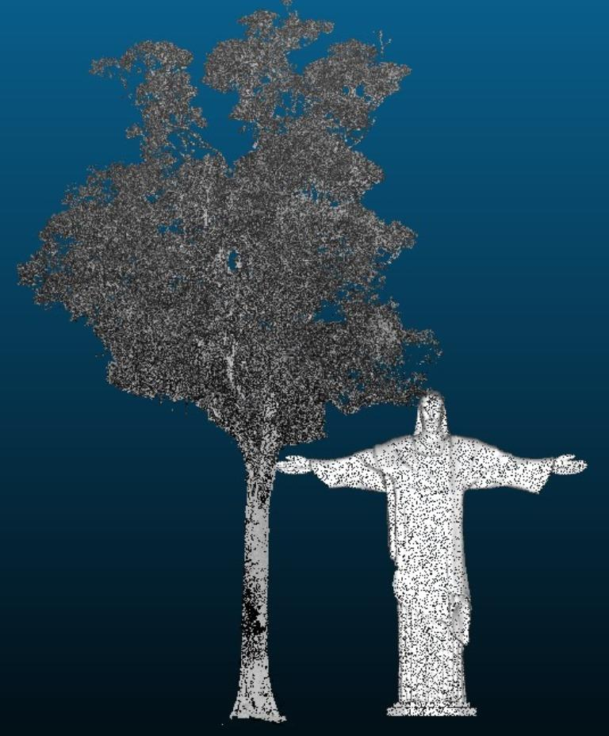

Giant Tree Ecology
Ecology, distribution, growth, mortality and persistence of emergent trees across Amazonian landscapes.
Forest Inventory · Environmental Monitoring · Functional Ecology
Mapping giant trees, forest carbon and climate resilience across Amazonian tropical forests.
OBSERVATORY FRAMEWORK
GigaFlor is a scientific observatory dedicated to long-term research on Amazon giant trees, forest structure, carbon storage, environmental gradients and climate resilience. The platform integrates forest inventory, environmental monitoring, functional ecology, LiDAR, spatial modeling and open science.

RESEARCH THEMES
Six integrated themes structure the scientific identity of GigaFlor.
Ecology, distribution, growth, mortality and persistence of emergent trees across Amazonian landscapes.
Aboveground biomass, carbon stocks and the disproportionate role of large trees in ecosystem carbon storage.
Environmental gradients, spatial modeling, hotspots and landscape-scale drivers of giant tree occurrence.
Airborne LiDAR, canopy height models, satellite products and three-dimensional forest structure.
Drought, warming, VPD, MCWD, climate vulnerability and future refugia for giant Amazon trees.
Plant traits, ecological strategies, hydraulic constraints and mechanisms of resilience under environmental stress.
FIELD GALLERY




RECENT PUBLICATIONS
Selected publications on Amazon giant trees, LiDAR, forest carbon, environmental gradients and climate vulnerability.
View publicationsINSTITUTIONAL PARTNERS